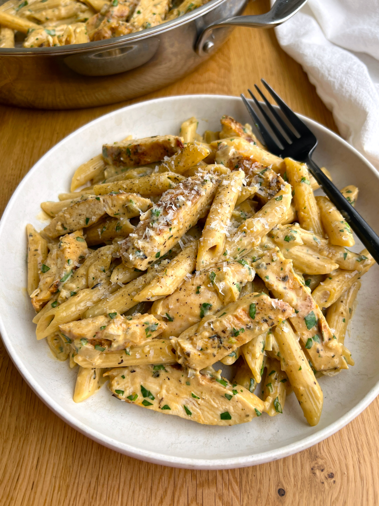

Parmesan Garlic Chicken

Ingredients
For the Chicken
- 1 tbsp avocado oil
- 1 lb boneless chicken breast
- 1 tbsp italian seasoning
- 1/2 tsp paprika
- salt & pepper
For the Pasta
- 1 tbsp avocado oil
- 1 tbsp unsalted butter
- 1/2 jumbo yellow onion
- 4-6 large cloves garlic minced
- 8 oz dry penne pasta
- 2 cups chicken broth
- 1 cup finely grated parmesan cheese
- 1/2 cup heavy cream
- 2 tbsp chopped parsley
Instructions
- In a small bowl, mix together the italian seasoning, paprika, salt & pepper. Pat the chicken dry and then rub both sides with the seasoning mixture.
- Bring a large pan to medium heat. Once hot, add avocado oil. Then, add seasoned chicken and cook for 3-5 minutes per side, until the internal temperature reaches 165F. Remove chicken from the pan and set it aside to rest.
- Reduce heat to medium-low and add more avocado oil and butter. Then, add onion and season it with salt. Cook, stirring occasionally, for about 3 minutes, or until beginning to get tender and translucent. Add garlic, stir, and cook for 1 minute longer.
- Deglaze the pan with chicken broth, scraping up all the browned bits stuck to the bottom. Allow the broth to come to a light boil. Then, add the dry pasta and stir to make sure that the pasta is submerged in the broth.
- Cover the pan and cook for 10 minutes or until the pasta is al-dente.
- Turn off the heat and add in the parmesan, heavy cream and parsley. Stir until the parmesan is melted and the sauce is warm and thickened slightly. Taste and adjust salt and pepper as needed.
- Slice the cooked chicken into strips and add it into the pan along with the pasta. Toss to combine. Then, serve & enjoy!
Home